Fiches Technologie
46 fiches d'exercices en français sur le thème « Technologie » : texte à trous, compréhension orale et mots mêlés, à imprimer (PDF) avec corrigé.
46 ressources
Niveau
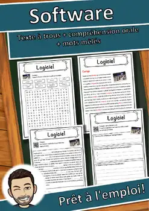
Software – Fiche de lecture : texte à trous, compréhension orale et mots mêlés

Empreinte digitale – Fiche CM1-CM2 : texte à trous, compréhension orale et mots mêlés

Moteur – Fiche de lecture : texte à trous, compréhension orale et mots mêlés
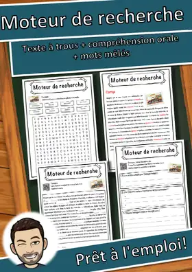
Moteur de recherche – Fiche : texte à trous, compréhension orale et mots mêlés
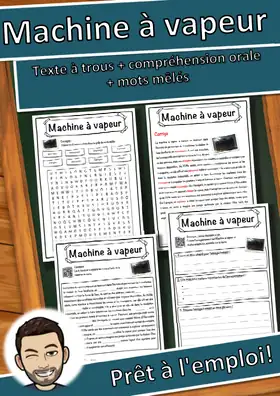
Machine à vapeur – Fiche : texte à trous, compréhension orale et mots mêlés
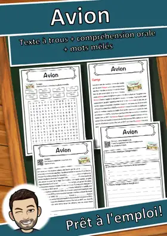
Avion – Fiche : texte à trous, compréhension orale et mots mêlés
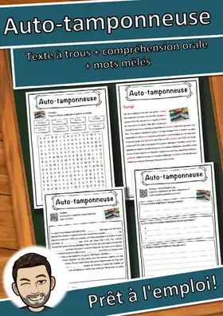
Auto-tamponneuse – Fiche : texte à trous, compréhension orale et mots mêlés
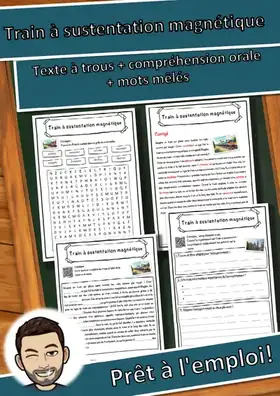
Train à sustentation magnétique – Fiche : texte à trous, compréhension orale et mots mêlés
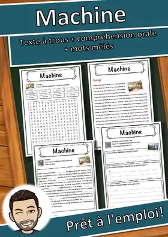
Machine – Fiche : texte à trous, compréhension orale et mots mêlés
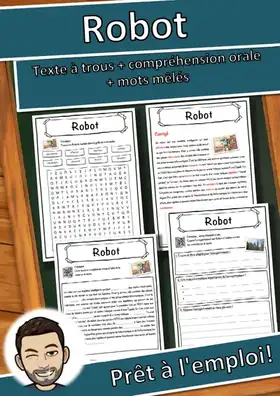
Robot – Fiche : texte à trous, compréhension orale et mots mêlés
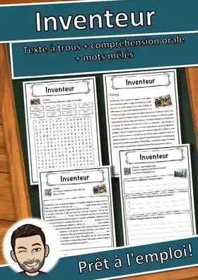
Inventeur – Fiche : texte à trous, compréhension orale et mots mêlés
Ordinateur – Fiche : texte à trous, compréhension orale et mots mêlés
Machine à écrire – Fiche : texte à trous, compréhension orale et mots mêlés
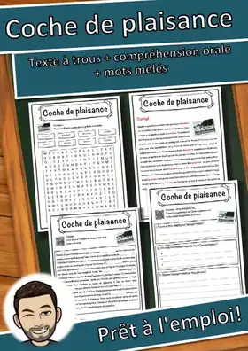
Coche de plaisance – Fiche : texte à trous, compréhension orale et mots mêlés
Brevet d'invention – Fiche : texte à trous, compréhension orale et mots mêlés
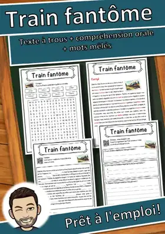
Train fantôme – Fiche : texte à trous, compréhension orale et mots mêlés
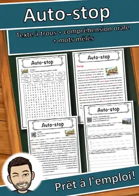
Auto-stop – Fiche : texte à trous, compréhension orale et mots mêlés
Mots mêlés : La famille – Mots mêlés – du CP au CM1
Mots mêlés : La famille – Mots mêlés – du CP au CM1
Mots mêlés : Au zoo – Mots mêlés – du CP au CM1
Mots mêlés : Au zoo – Mots mêlés – du CP au CM1
Mots mêlés : Animaux sauvages – Mots mêlés – du CP au CM1
Mots mêlés : Animaux sauvages – Mots mêlés – du CP au CM1
Mots mêlés : Les abeilles – Mots mêlés – du CP au CM1
Mots mêlés : Les abeilles – Mots mêlés – du CP au CM1
Mots mêlés : Le corps et les sens – Mots mêlés – du CP au CM1
Mots mêlés : Le corps et les sens – Mots mêlés – du CP au CM1
Mots mêlés : Printemps – Mots mêlés – du CP au CM1
Mots mêlés : Printemps – Mots mêlés – du CP au CM1
Mots mêlés : La ferme – Mots mêlés – du CP au CM1
Mots mêlés : La ferme – Mots mêlés – du CP au CM1
Mon cahier de calcul : nombres jusqu'à 1000 – CE2
Mon cahier de calcul : nombres jusqu'à 1000 – CE2
Mots mêlés : Loisirs – Mots mêlés – du CP au CM1
Mots mêlés : Loisirs – Mots mêlés – du CP au CM1
Mots mêlés : Les vêtements – Mots mêlés – du CP au CM1
Mots mêlés : Les vêtements – Mots mêlés – du CP au CM1
Mon cahier de calcul : nombres jusqu'à 20 – CP–CE1
Mon cahier de calcul : nombres jusqu'à 20 – CP–CE1
Mon cahier de calcul : nombres jusqu'à 100 – CE1
Mon cahier de calcul : nombres jusqu'à 100 – CE1
Mots mêlés : Au restaurant – Mots mêlés – du CP au CM1
Mots mêlés : Au restaurant – Mots mêlés – du CP au CM1
Mots mêlés : Cuisiner et pâtisser – Mots mêlés – du CP au CM1
Mots mêlés : Cuisiner et pâtisser – Mots mêlés – du CP au CM1
Mots mêlés : Fruits et légumes – Mots mêlés – du CP au CM1
Mots mêlés : Fruits et légumes – Mots mêlés – du CP au CM1
Mots mêlés : Au jardin – Mots mêlés – du CP au CM1
Mots mêlés : Au jardin – Mots mêlés – du CP au CM1
J'ai, qui a ? Été – Boucles de lecture – du CP au CM1
J'ai, qui a ? Été – Boucles de lecture – du CP au CM1
Mots mêlés : Animaux de compagnie – Mots mêlés – du CP au CM1
Mots mêlés : Animaux de compagnie – Mots mêlés – du CP au CM1
Escape room Hiver, Français 6e (cycle 3) : 6 stations, 2 cadenas, un mot magique (GRATUIT)
Escape room Hiver, Français 6e (cycle 3) : 6 stations, 2 cadenas, un mot magique (GRATUIT)
Mots mêlés : Métiers – Mots mêlés – du CP au CM1
Mots mêlés : Métiers – Mots mêlés – du CP au CM1
Mots mêlés : Le cirque – Mots mêlés – du CP au CM1
Mots mêlés : Le cirque – Mots mêlés – du CP au CM1
Mots mêlés : L'école et la classe – Mots mêlés – du CP au CM1
Mots mêlés : L'école et la classe – Mots mêlés – du CP au CM1
Mots mêlés : Automne – Mots mêlés – du CP au CM1
Mots mêlés : Automne – Mots mêlés – du CP au CM1
Atelier des personnages : Picasso – Pack Plus avec textes à 3 niveaux, quiz et activité, CE2–CM1
Atelier des personnages : Picasso – Pack Plus avec textes à 3 niveaux, quiz et activité, CE2–CM1
Atelier des personnages: Helen Keller Pack Plus
Atelier des personnages: Helen Keller Pack Plus
Atelier des personnages : Rosa Parks – Pack Plus avec textes à 3 niveaux, quiz et activité, CE2–CM1
Atelier des personnages : Rosa Parks – Pack Plus avec textes à 3 niveaux, quiz et activité, CE2–CM1
Atelier des personnages : Zeus – Pack Plus avec textes à 3 niveaux, quiz et activité, CE2–CM1
Atelier des personnages : Zeus – Pack Plus avec textes à 3 niveaux, quiz et activité, CE2–CM1
Atelier des personnages : Mozart – Pack Plus avec textes à 3 niveaux, quiz et activité, CE2–CM1
Atelier des personnages : Mozart – Pack Plus avec textes à 3 niveaux, quiz et activité, CE2–CM1
Atelier des personnages : Marie Curie – Pack Plus avec textes à 3 niveaux, quiz et activité, CE2–CM1
Atelier des personnages : Marie Curie – Pack Plus avec textes à 3 niveaux, quiz et activité, CE2–CM1
Aucune ressource trouvée – essaie un autre mot ou un autre filtre.